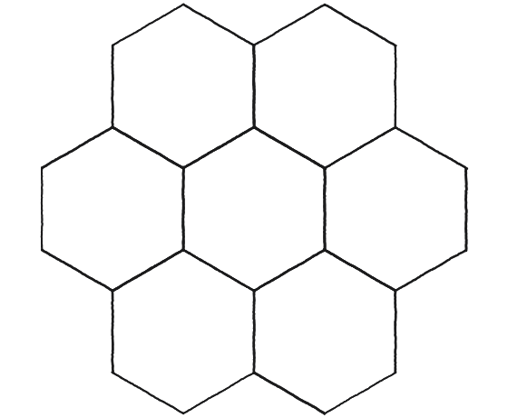
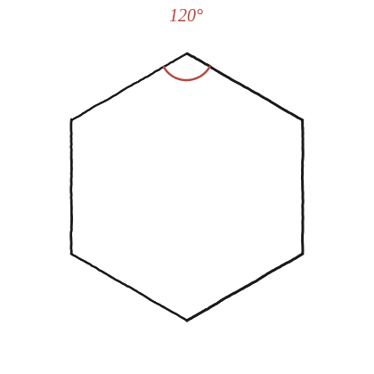
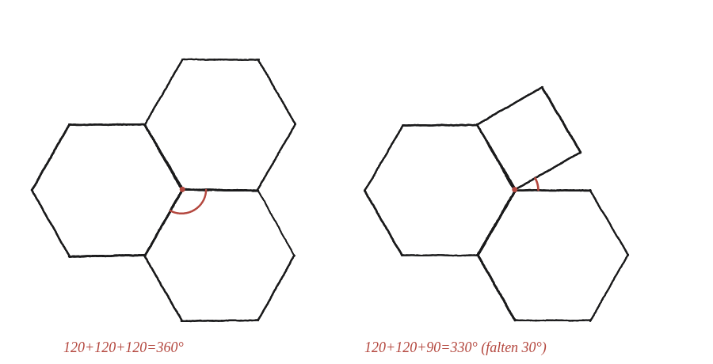

Quantes maneres diferents hi ha de fer dissenys de mosaic simètrics amb polígons regulars?

Què vol dir "encaixar" en un mosaic
A cada punt on es toquen diversos polígons d'un mosaic, els seus angles interiors s'hi han d'ajuntar sumant exactament 360°: ni menys —hi quedaria un buit obert— ni més —se sobreposarien uns polígons amb els altres. La pregunta "quants dissenys simètrics hi ha" es converteix, doncs, en una de comptar: quines combinacions de polígons regulars, sumant els seus angles interiors, arriben a exactament 360°?
Provar-ho amb el cas més senzill
Un hexàgon regular té un angle interior de 120°. Tres hexàgons ajuntats en un mateix vèrtex sumen 3×120°=360°: tanquen exactament, sense buit ni sobreposició —el patró clàssic del rusc d'abelles. En canvi, dos hexàgons més un quadrat (90°) sumen 120+120+90=330°: hi queda una escletxa oberta de 30° que cap polígon regular hi encaixa.

Recórrer totes les combinacions possibles
Repetint el mateix comptatge per a cada polígon regular, i buscant sempre la suma exacta de 360°: amb triangles (60°) en calen exactament 6. Amb quadrats (90°), exactament 4. Amb pentàgons (108°), 3 en fan 324° —no arriben— i 4 en farien 432° —s'hi passen—, de manera que cap nombre de pentàgons no tanca. Amb hexàgons (120°), exactament 3. Amb heptàgons (≈128,57°) i amb qualsevol polígon de més costats, 2 còpies no arriben i 3 ja se n'excedeixen: cap d'aquests polígons no pot tapissar el pla ell sol.
Val la pena aturar-se en un error fàcil de cometre. 3, 4 o 5 triangles equilàters fan 180°, 240° i 300°, i cap d'aquestes configuracions no serveix per a un mosaic: hi deixen un buit obert. Les sumes per sota de 360° són la condició d'una altra pregunta —la dels poliedres regulars, q08b— on justament cal que sobri angle perquè la figura s'aixequi cap a la tercera dimensió. Aquí, al pla, tot allò que no siguin 360° exactes deixa un forat.
Si es permet barrejar polígons diferents en un mateix vèrtex, la llista creix, però continua sent finita: hi ha exactament 17 combinacions de polígons regulars els angles de les quals sumen 360°. Unes quantes són fàcils de trobar provant: un quadrat i dos octàgons (90+135+135), un triangle i dos dodecàgons (60+150+150), un quadrat, un hexàgon i un dodecàgon (90+120+150), dos triangles i dos hexàgons (60+60+120+120), tres triangles i dos quadrats (60+60+60+90+90). I n'hi ha de força exòtiques: un triangle, un heptàgon i un polígon de 42 costats sumen 60 + 900/7 + 7200/42 = 360° exactes. Cadascuna d'aquestes combinacions és una roseta vàlida: pot envoltar un únic vèrtex sense deixar-hi buit ni sobreposició.

El que aquest comptatge demostra, i el que no
Val la pena aturar-se a mirar amb precisió què s'ha demostrat. La condició dels 360° és una condició local, vàlida per a un sol vèrtex: diu quines rosetes de polígons poden existir al voltant d'un punt —i, sobretot, quines no poden existir de cap manera, perquè sumen menys o més de 360°. El que aquesta condició no diu és si, un cop tenim una roseta vàlida en un vèrtex, aquell mateix patró es pot continuar repetint fins a cobrir tot el pla sense encallar-se més enllà. Hi ha combinacions que tanquen perfectament en un primer vèrtex i que, en intentar estendre el mosaic al vèrtex veí, deixen de quadrar.
Aquesta distinció —una roseta és possible en un vèrtex davant de un mosaic sencer existeix— és exactament la mateixa que ja apareixia a q08b amb els poliedres regulars (allà, angle menor que 360° perquè la figura s'aixequi cap a la tercera dimensió, no igual). La diferència és que, en aquell cas, cadascuna de les cinc rosetes que superaven el comptatge donava efectivament un sòlid real; aquí, en canvi, no totes hi arriben. De les 17 rosetes que tanquen, només 11 es poden estendre a un mosaic amb tots els vèrtexs iguals: les 3 d'un sol polígon (triangles, quadrats, hexàgons) i 8 de barrejades. La del triangle + heptàgon + polígon de 42 costats, per exemple, tanca perfectament el primer vèrtex i s'encalla immediatament al veí. Aquesta segona meitat no es resol comptant angles: cal dibuixar, vèrtex rere vèrtex.
Amb un sol tipus de polígon només n'hi ha tres: 6 triangles, 4 quadrats o 3 hexàgons per vèrtex. Si es permet barrejar-los, el comptatge d'angles a 360° dona 17 rosetes possibles al voltant d'un punt. Però aquesta condició és només local: de les 17, només 11 arriben a estendre's en un mosaic que cobreixi tot el pla amb tots els vèrtexs iguals. Saber quines exigeix dibuixar vèrtex rere vèrtex, no només sumar angles.
Comprovació
Sis triangles: 6×60°=360° ✓. Quatre quadrats: 4×90°=360° ✓. Tres hexàgons: 3×120°=360° ✓. Tres pentàgons: 3×108°=324°, no arriba. El comptatge d'angles només confirma que aquestes rosetes són possibles en un vèrtex —no que el mosaic complet s'aconsegueixi estendre sense entrebancs pel pla.